Click Here to View Visualization
Source Data: https://www.ncei.noaa.gov/pub/data/swdi/stormevents/csvfiles/
Selected 2025.csv and removed transitionary or redundant variables and only kept the following: MONTH_NAME, STATE, REGION, SEASON, EVENT_TYPE, INJURIES_TOTAL, DEATHS_TOTAL, DAMAGE_TOTAL, plot_lat, plot_lon
First, I needed to decide which variables had the most potential for visualization given my knowledge and available skillset with D3. Overall, I thought the "MONTH_NAME" and "SEASON" variable might prove useful for a time variable on the x-axis or as a potential dropdown option, so I added them to the list of options. I thought that the geographical variables "STATE" and "REGION" had potential for some kind of mapping, or just to use as a categorical variable on the x-axis or as a dropdown option, so I added these to possibly use. I didn't even need to think about whether "EVENT_TYPE" could be useful as this was a very easy identifier of the kinds of events that would fit either on the x-axis, or it might be possible to use different colors to identify the different ones on the same chart, or like the others, a dropdown option like the others. Most importantly, I believed the different severity variables of "INJURIES_TOTAL", "DEATHS_TOTAL", and "DAMAGE_TOTAL" would prove essential as the primary contenders for graphed values as they were discrete numerical values. The only variables I dropped from my potential uses were the "plot_lat" and "plot_lon" values as according to the NOAA data information, a large number of the data records used state centroids rather than the event coordinates itself, and at that point, the "STATE" would be more useful than the coordinates because the centroids would easily outweigh the other points. Thus, to avoid data skewing and misinformation, they were not considered.
After choosing my variables, I tried to brainstorm potential topics that I might want to explore from an overview perspective. The questions that I thought had the most potential for implementation and research were roughly as follows:
What kind of storms cause the most property damage/deaths/injuries?
How does events' frequency/damage/deaths/injuries change across time?
Is there any kind of relationship between frequency and severity/ frequency and geography/geography and severity?
Which regions suffer the highest frequency/injuries/deaths/property damage from events?
Looking back over the textbook code examples as well as what was touched on in the lectures, I knew that I didn't want to complicate the interactivity too much and just work with what I'd known and already practiced. Thus, I settled on a potential drop down to filter, and a highlighting feature that displayed the specific measured numbers so that the visual aspect was partnered with something concrete, and the reader doesn't need to guess the measurements from the visualization alone.
Next was probably the most mentally intensive part of the process, as I needed to decide on a realistic design plan for my project. Like the choice for interactivity, I knew I was largely limited by what I was able to code and needed to consider the code at my disposal from the textbook and lectures. When deciding on the actual chart types, I narrowed my potential options down to three feasible options with my given variables (there were more options and designs, but these three were the ones I spent the most time thinking about and even wrote out the pseudo code for).
The first option was a heat map, or more specifically, a choropleth of the United States with the measured (heat) variable being any of the severity variables. I thought it might even be a great possibility to add a dropdown for which variable was shown of the "INJURIES_TOTAL", "DEATHS_TOTAL", or "DAMAGE_TOTAL."
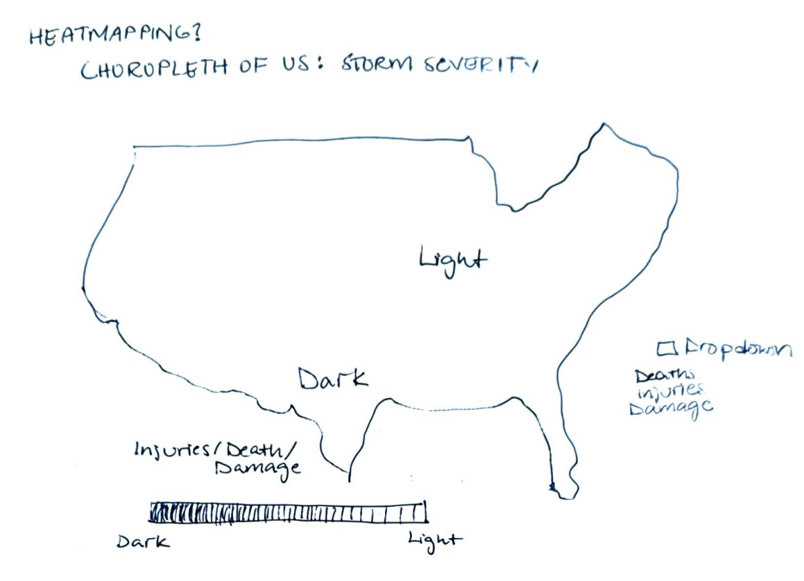
Option number two revisited my decision to use time variables, as I believed I could use them for a line chart that showed count of events, or any one of the severity variables ("INJURIES_TOTAL", "DEATHS_TOTAL", "DAMAGE_TOTAL") over each month with different colors for each different "EVENT_TYPE". I considered making use of specific plot points, making them appear as a highlightable point that displayed specific measurements like specified before. Additionally, I considered potentially adding event types as different colored lines on the chart and adding a drop down to filter for specific states as well as the default national overview.
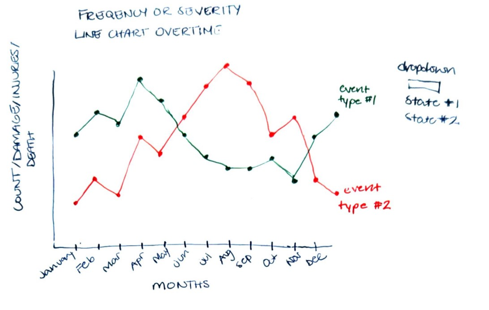
Option number three was the possibility for a bar chart with count of events on or severity values ("INJURIES_TOTAL", "DEATHS_TOTAL", "DAMAGE_TOTAL") on the y-axis as the bars and the different kind of event-types on the x-axis. I thought I could implement different colors for the different events for a better separation, and I thought that it might also be able to encompass temporal attributes, so adding a dropdown for month could be an option as well. The user could also highlight one event-type's bar to see specific metrics as specified earlier.
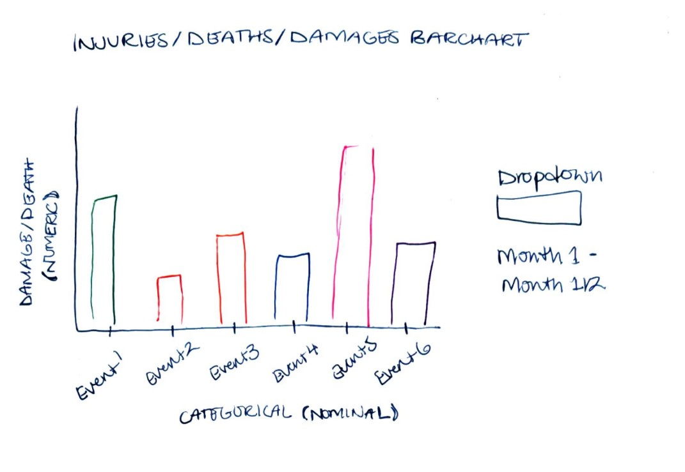
I knew the choropleth map would easily be the most visually appealing out of all three of my primary contenders; however, I immediately realized that it'd be possibly very time intensive and introduce problems when it came to generating correctly, and the way I envisioned. This was the case especially when taking into account how the accuracy of specific datapoints would affect mapping and how I would get the states to map instead, etc.. The line chart might also prove aesthetically pleasing and could be very intuitive to understand with all of the event types color coded. However, I thought that it might be somewhat dishonest using non-continuous points on a line chart, because that implies a sort of consistent linearity between points.
Ultimately, I decided on going with the bar chart design because I thought it would be the most honest display of data. I also favored it as I believed it was the most straightforward and feasible option with my limited knowledge/experience with D3. Plus, I wanted to make sure I prioritized working with a design that I could successfully code so that I'd be able to focus more on refining design and interactivity implementations. I didn't want the bulk of my time to be consumed with working through more complex types of code (though I did end up having to look at external sources for help, particularly when it came to debugging). So overall, I found that the bar chart would probably provide an easily comprehendible means of comparing categorical event types, and it would also leave the door open for more interactivity and design choices.
I chose a relatively basic bar graph design, similar to what was performed previously in the example lectures to limit mistakes and enhance workability on the other interactive features. Once I had a more concrete direction, and had decided on a chart type, the rest of the process was going through different iterations of approximately the version of my finalproject.html with small changes added, implemented, removed, and reimplemented and so on. The following were several of the decisions and design choices I made along the way, as well as my rationale for those choices.
When I was trying to decide what severity variables to graph on the y-axis ("INJURIES_TOTAL", "DEATHS_TOTAL", "DAMAGE_TOTAL"), I obviously knew that injuries and deaths were very important measures that most people would care about and take seriously. However, I ultimately decided to display damage because it provided a more constantly scaled view of comparable metrics across all of the event types. I found that for many event types, injuries and deaths were often very few and far between, or they were just zero. That would be potentially difficult to gain any takeaways when working with a bar chart, so I just decided on damage. I had also considered including multiple severity variables at the same time, on the same bar. I'd also thought that it could make for an additional dropdown option. However, I decided not to do this as it'd introduce too much noise and increase clutter on the same page. It wasn't very visually appealing either. I concluded that adding too many charts or dropdown selections would require consistent switching or remembering previous selections and detract from comprehension. Thus, I decided that a single severity variable would make for a more direct data story.
After I had decided on damage as the focus of the visualization, I reconsidered my original thought about using frequency (count of events) as a potential contender variable on the y-axis. Now, I'd started thinking that frequency as a second side-by-side bar chart could prove relatively useful as a complementary variable, because it provided additional context (that I didn't think the other severity values conveyed as they were just separate severity values rather than a complementary one). It would basically allow for a direct visual comparison between how often an event occurs and how damaging it is with an immediate view between the two.
Originally, I'd just preset the y-axis of the graph with a set number of events and set value for damage. I'd justified this approach under the reason that I thought that keeping these established maximum values consistent across the separate months (later changed to seasons) and annual view was better for a quick glance between each and how it correlates with one another. However, I realized that this hadn't truly aided with comprehension because of the stark differences in values. On the contrary, in many cases it nearly eliminated the bars completely because of lower damage values. So, I decided a more flexible approach using the max and min of the available values was a more practical appraoch
Originally considered having each event type being a different color to differentiate, or having separate charts be a different color, having seasons be a different color, and so on. I experimented with color schemes similar to tableau but ultimately, I found this to just be for aesthetics rather than functionality, because when the event types are already compartmentalized onto separate bars, it's easy to differentiate one event from another already. Ultimately, I scrapped the coloration altogether it in favor of more direct interpretation over arbitrary stylistic choices. However, I did decide that having it highlight as a specific color that highly contrasted with the default blue color could be useful. So rather than just having the others dim away, I also decided to highlight it in that bright orange color on top of having the other bars dim.
I thought that having the damage values on a logged scale might better help with comprehension, mostly for the smaller values that didn't quite hit a million, so wouldn't show up on the bar chart. However, when I ended up implementing the change, I realized that it didn't really help with comparison. This is because it flattened out the graphs to some extent, making lower values appear much too high and higher values appear much too low. Basically, it made the values look way too similar when they shouldn't have which would easily lead to misinterpretation. So, I withdrew the changes.
Originally, I had been using months as the primary filter for time, but I thought it ultimately added way too many options because it made the visualization "granular" so to speak. Because there were twelve separate visualization versions, it was a lot harder to see bigger patterns and the comparisons between each month were often somewhat obsolete. Damages were also very sporadic at the monthly level, and this often meant more misleading bars and a lot of outliers. I felt like grouping the data into seasons instead (since that was a convenient alternative) allowed for a much simpler interaction and added to the meaningfulness of the patterns. It was a choice made for easier interaction, clearer view, and a smoothed-out variability.
It was already somewhat possible to visually see what the highest and lowest values were when the visualization was in its default layout (alphabetical by EVENT_TYPE), but this was somewhat more labor intensive than what I really wanted the visualization to be. Especially when there were bars that appeared similar at first glance. Yes, you could highlight over it to see specific values, but I wanted an even more easily viewable format. Adding sort options would allow the user to easily and quickly sort the data based on either frequency or damage metrics, and I felt like this would make the most important EVENT_TYPEs clearly standout. Also, making it so that the sorting was synched between both of the charts was very important to me, as it makes sure that the EVENT_TYPEs stay in the same order across the side-by-side. That would allow for a more direct comparison between frequency and damage, so that takeaways would be more intuitive. By adding the sort feature, I felt like I made the visualization far more effective, efficient, and understandable.
Out of all of the design choices, I think this one was the least essential, but I ultimately decided to add it just for my own usability, and also for more user control. Because there were a few different sorting and filtering options, the visualization would completely transition to a different state, and I wanted to make it so that I could reorient myself (and the user could as well) back to the original option. I disliked that I had to manually undo each change to revert the visualization back to before, so I added a single reset button allowing for a more user-friendly approach. It was a small addition, but I thought it was necessary and actually added quite a bit utility-wise.
The following entails the more prominent takeaways from the visualization:
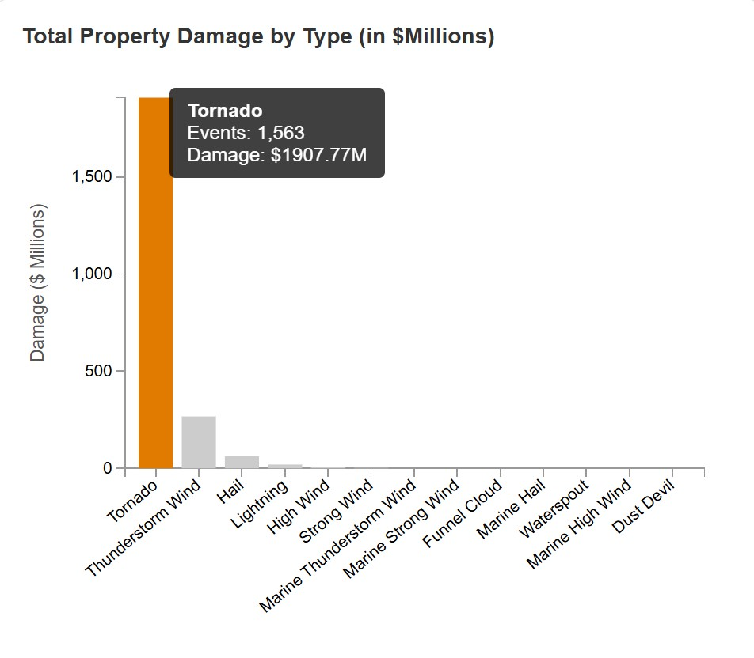
This bar chart remained at the default "All Seasons" overview but was sorted by the amount of Total Property Damage (in USD) per event. Tornadoes were by far the most fiscally devastating event causing $1907.77 Million dollars in damages for the 2025 calendar year. Outside of "Thunderstorm Wind", "Hail" and "Lightning" events (which were respectively the next most damaging EVENT_TYPE), the remainder of the fields caused relatively negligible damage.
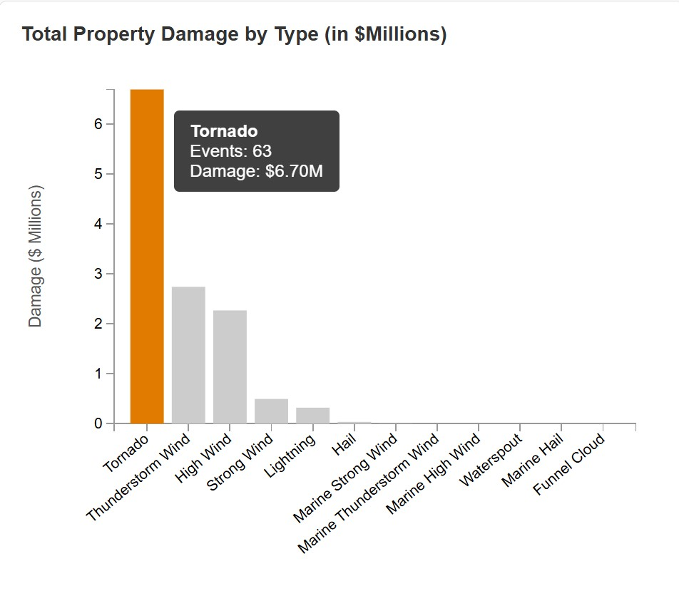
This bar chart was filtered for the “Winter” season and sorted by Damage. Like in the overview, it would appear that tornadoes were the most damaging EVENT_TYPE within Winter as well, causing an estimated total of $6.70 million in damages. The next respective damaging Winter storm events were “Thunderstorm Wind” with approximately $2.75 million in property damage, followed by “High Wind” causing over $2 million in damages. The next most damaging events dropped down to under $0.5 million in damages, and the rest of the events caused negligible damage with respect to the other aforementioned EVENT_TYPEs. It’s interesting to note that, overall it would appear that this season is one of the seasons with the least amount of damage (Y-Axis scale is significantly smaller in comparison to other seasons).
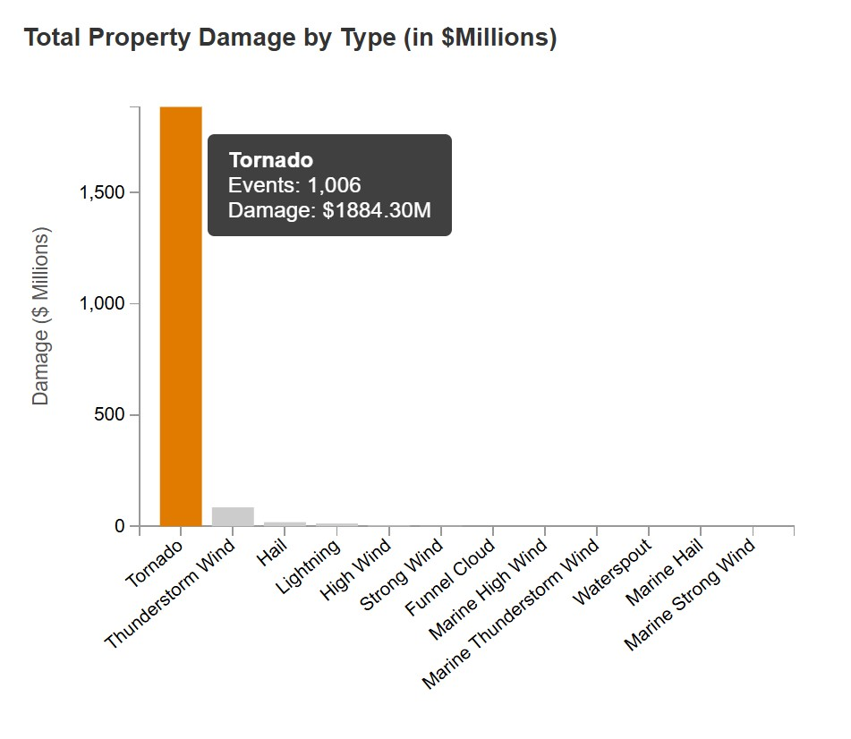
This bar chart was filtered for the “Spring” season and sorted by Damage. Similar to the last two bar charts sorted by damage, the “Tornado” EVENT_TYPE once again leads with the highest damage caused, standing tall at a whopping $1884.30 million in damages. The next few contenders are “Thunderstorm Wind”, “Hail” and “Lightning” before the chart dips into negligible damage with respects to the massive amount of damage caused by tornadoes in the 2025 Spring Season. It’s interesting to note that this season appears to witness that most event damage by far, as the y-axis ranges all the into the billions.
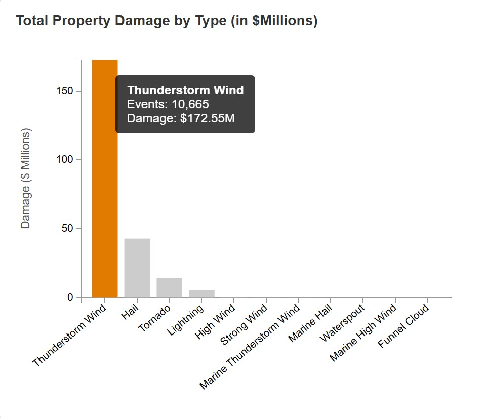
This bar chart was filtered for the “Summer” season and sorted by Damage. Surprisingly, we can see a shift in the outcome of most damage, as it would appear that “Thunderstorm Wind” events – which are presumably traditional thunderstorms without lightning touchdown – takes the lead in property damage during this season. It comes in at roughly $172.55 million in damages followed by “Hail” events at $42.56 million, “Tornado” events at $13.99 million, and “Lightning” events at $4.94 million. The rest of the EVENT_TYPEs were negligible with respect to these values. Additionally, this season appears to witness the second highest amount of damage with respect to the other seasons (y-axis goes into the hundreds of millions).
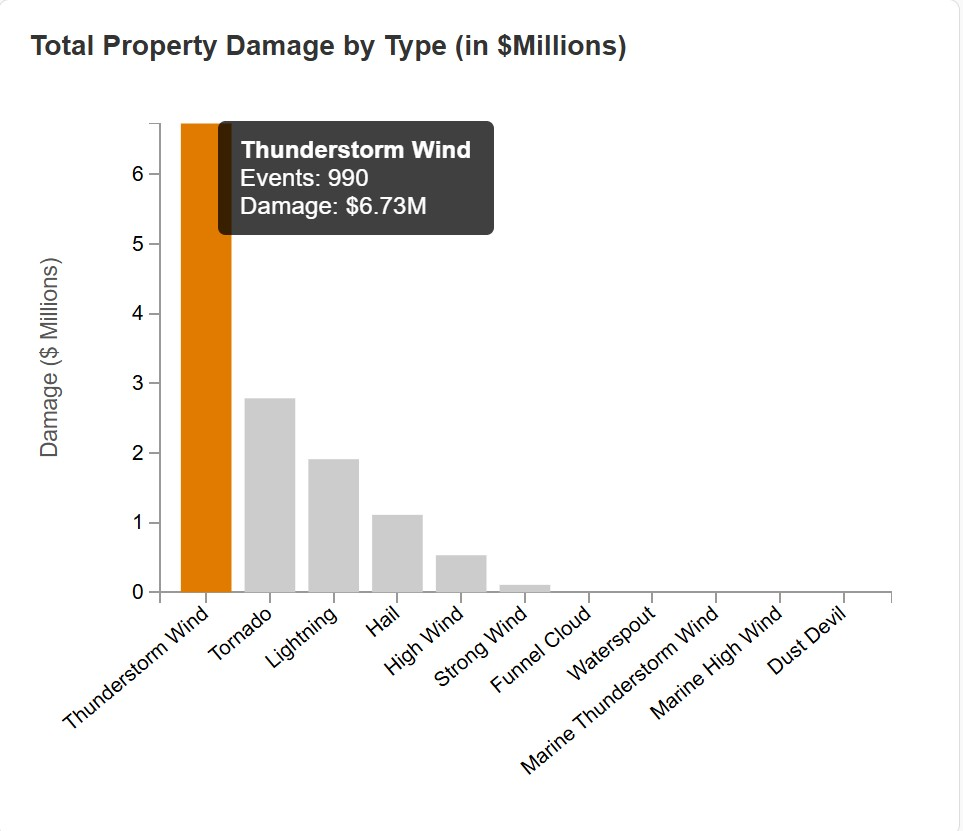
This bar chart was filtered for the “Fall” season and sorted by Damage. We don’t see a big shift from spring, as the highest cause of damage is still “Thunderstorm Wind” at $6.73 million in damages, followed by “Tornado” at $2.79 million, “Lightning” at $1.91 million, and Hail at $1.1 million. “High Wind” and “Strong Wind” were next with roughly $0.5 million or less, and the remaining categories were negligible with respects to the scaling of the other aforementioned events. Similar to the Winter season, it would appear that Fall sees some of the least amount of damages (on a much smaller y-axis scale than the others).
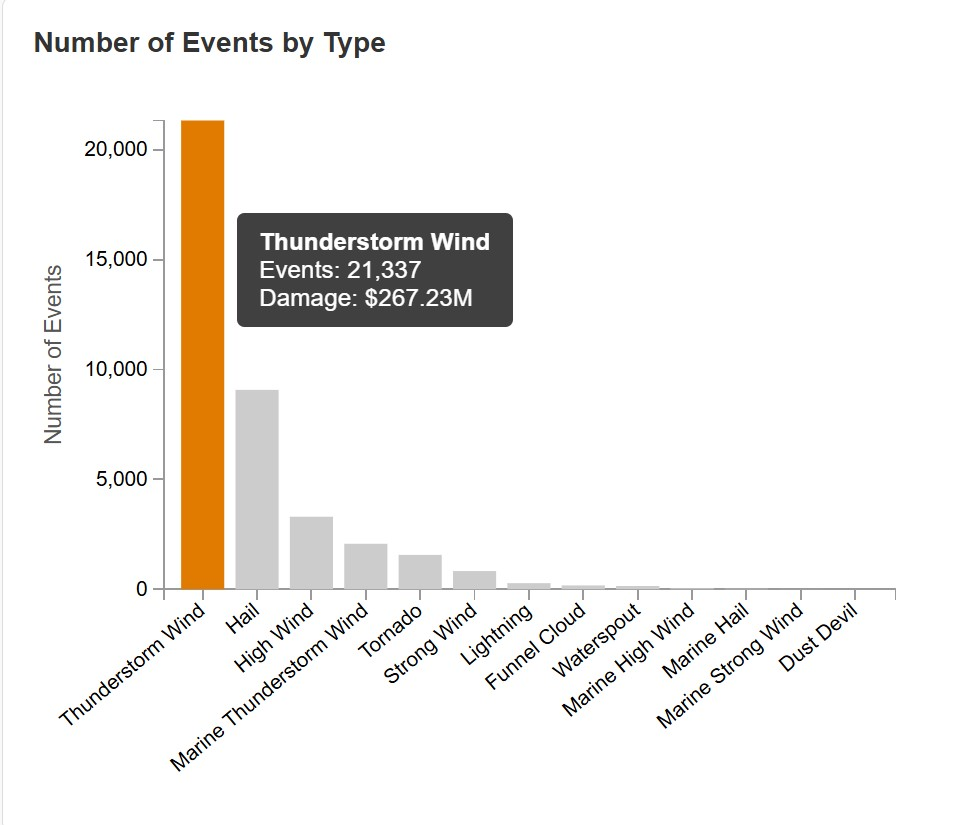
This bar chart remained at the default “All Seasons” overview but was sorted by the Count of Events by Event Type. The bar graph on frequency appears to have slightly less of a disparity situation between the dominating event frequencies and the less common ones. Overall “Thunderstorm Wind” events were by far the most frequent events with over 21 thousand occurrences. “Hail” events were the next most often, and its total occurrences weren’t even half that at a little over 9 thousand occurrences. The next few in respective order were “High Wind”, “Marine Thunderstorm Wind”, and “Tornado” before we start seeing events with less than a thousand occurrences per year.
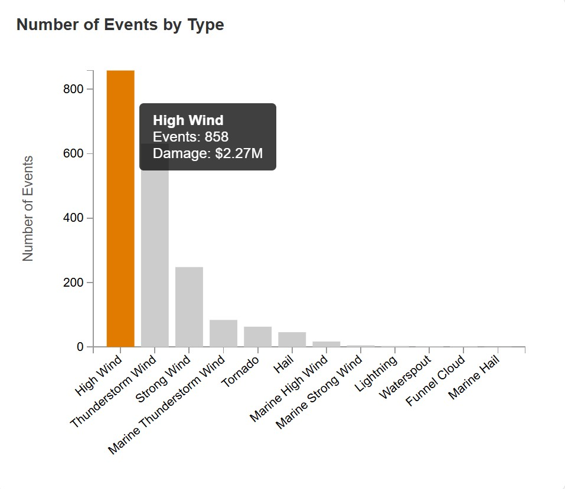
This bar chart was filtered for the “Winter” season and sorted by Count. Noticeably, Winter appears to have a relatively lower number of events, as will be seen in the other Seasons shortly. The highest count of a single EVENT_TYPE is “High Wind” coming in at 858 events in the winter of last year. It was followed relatively closely behind by “Thunderstorm Wind” events at 631. Next came “Strong Wind” at 248 and “Tornado” at 63 before the number of events started dropping below 50 events.
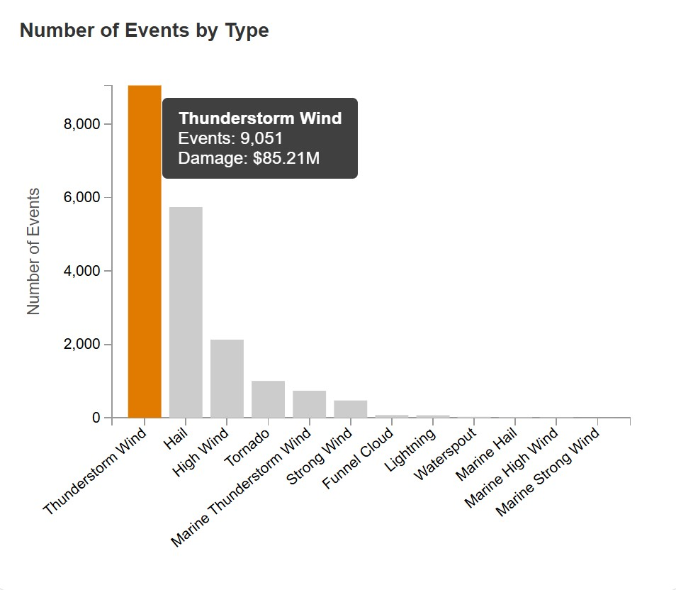
This bar chart was filtered for the “Spring” season and sorted by Count. Fort the season of spring, we see the second highest number of events occurring with the y-axis coming in at a max of roughly 9,000 events. “Thunderstorm Wind” is the most common EVENT_TYPE with roughly 9.05 thousand counts, followed by “Hail” at 5.7 thousand, “High Wind” at 2.1 thousand, and “Tornado” events at 1.0 thousand before the counts start dipping below a thousand.
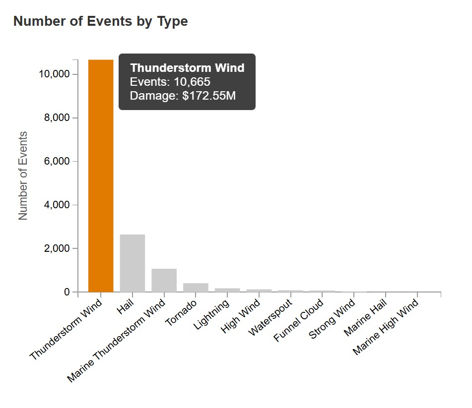
This bar chart was filtered for the “Summer” season and sorted by Count. The Summer of 2025 had the highest number of events with the y-axis reaching above 10,000 events. The top spot was held once again by “Thunderstorm Wind” events at a count of roughly 10.7 thousand. The next most often occurring event was a quarter of that number; “Hail” came in at roughly 2.6 thousand events, followed by “Maring Thunderstorm Wind” at 1,073 before the counts started dipping below one thousand.
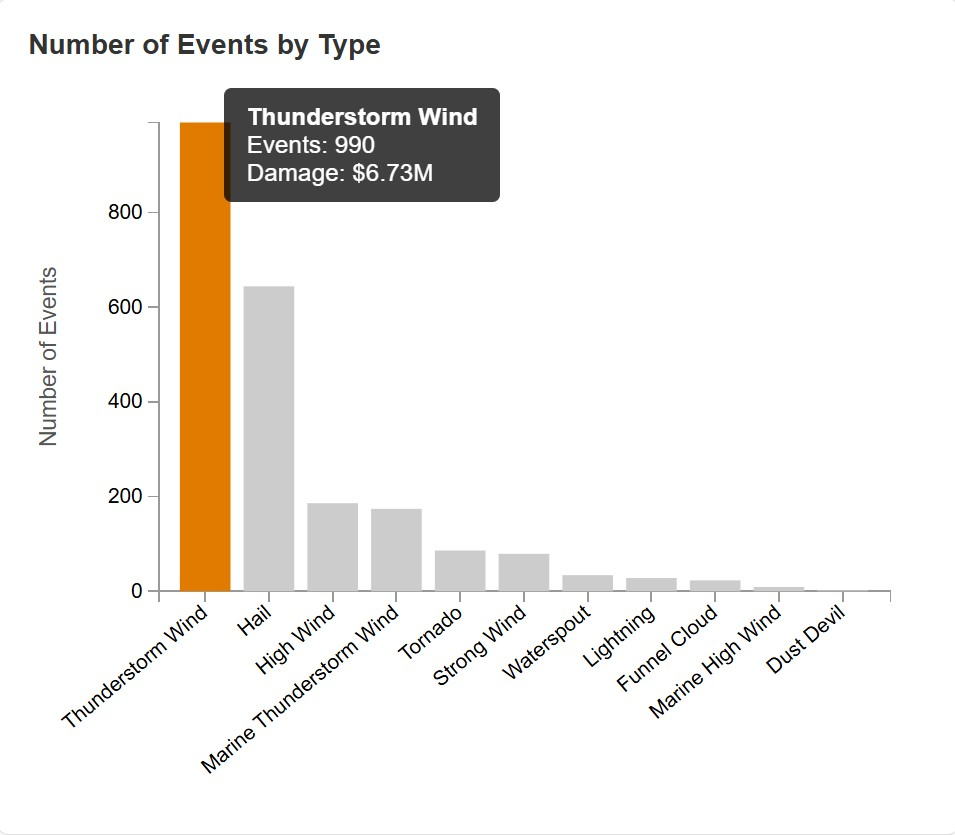
This bar chart was filtered for the “Fall” season and sorted by Count. Similar to Winter, we see a relatively low number of total events, with the y-axis at roughly 1,000 counts maximum. The most commonly occurring event for Fall of 2025 appears to be “Thunderstorm Wind” events with 990 counts, followed by “Hail” at 644, “High Wind” at 186, and “Marine Thunderstorm Wind” coming in at 174 before the numbers start dipping below 100 occurrences.
Overall we see a massive difference in the number of events during the “drier” months of Winter and Fall, and the “wetter” months of Spring and Summer. However overall it would seem that “Thunderstorm Wind” events are typically the highest number of occurring EVENT_TYPEs, and if it’s not “Thunderstorm Wind”, then it was “High Wind” in winter.
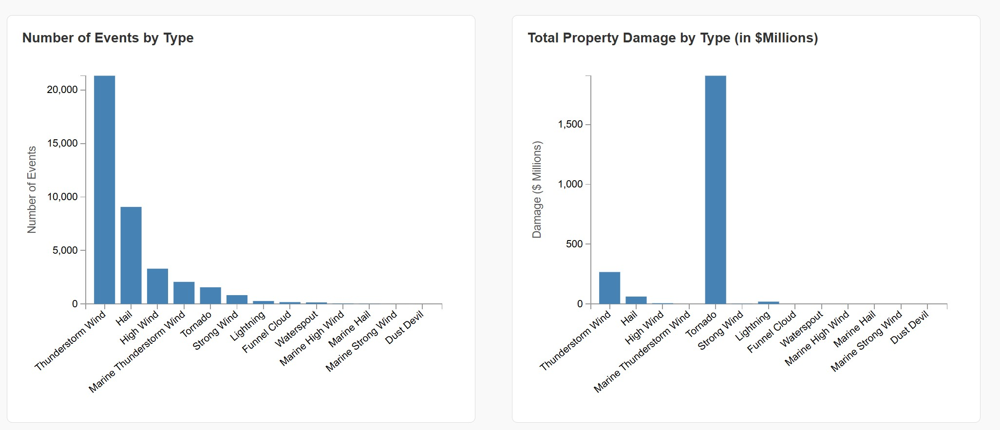
The bar charts above remained at the default "All Seasons" overview but were sorted by the Count of Events by Event Type.
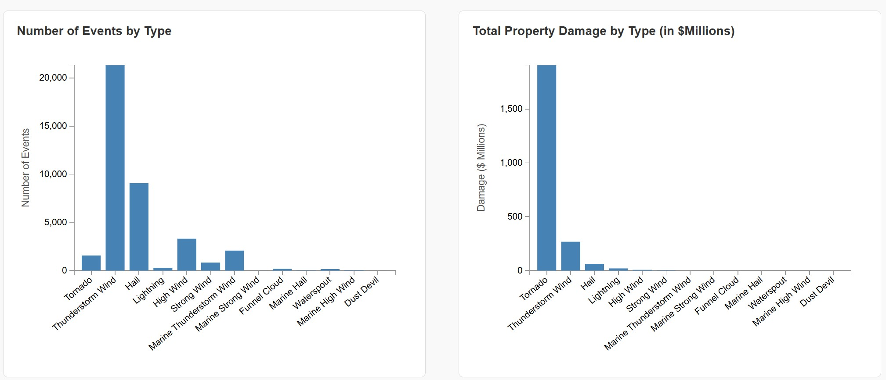
The bar charts abvove remained at the default "All Seasons" overview but were sorted by the amount of Total Property Damage (in USD) per event.
The “Tornado” EVENT_TYPE was by far the most destructive type of event in the 2025 calendar year, coming in at roughly $1907.77 million in damages. However, it wasn’t even close to being the most frequent with only 1,568 events for the entire year. Its occurrence count wasn’t even a tenth of the most commonly occurring event, which was “Thunderstorm Wind” with 21,337 recorded occurrences for the calendar year. Similar to the disparity in frequency and damage as seen in the “Tornado” type, there’s a large gap in this EVENT_TYPE as well. Though it’s more common than tornadoes by tenfold, these events cause less than a quarter of the damage coming in at $267.23 million. It’s not particularly surprising that they do cause several hundreds of millions in damages, but it’s shocking that they don’t even compare to the devastating nature of tornadoes. This is a good indicator that the areas which see both events might want to place more precautionary measures in place for tornadoes specifically over traditional thunderstorms.
Outside of the concrete numbers of these bar graphs, there were other broader lessons learned from just the interactive nature of the visualization itself. I think that by adding methods of filtering and sorting, it completely enhances the ability to interpret and shape the narrative to your own purposes as a user. More specifically, adding the ability for the data to be filtered by season let the rankings shine through and it was obvious they weren’t fixed and very highly dependent on seasonal situations. So, an event type that was the most damaging overall wasn’t necessarily the most damaging event type within a specific season and vice versa. Likewise, the sorting ability significantly allowed for better readability and interpretation as it allowed for much easier comparison between values (especially with the more middle range values). Because of the sorting method, the patterns in frequency and occurrences, and lack of relationship between the two became a lot more apparent. Overall, I think that this served as a prime example of how even simplistic interactive tools (in this case filtering and sorting) adds so much to the user experience and allows for better data exploration, comprehension, and story-telling in general.